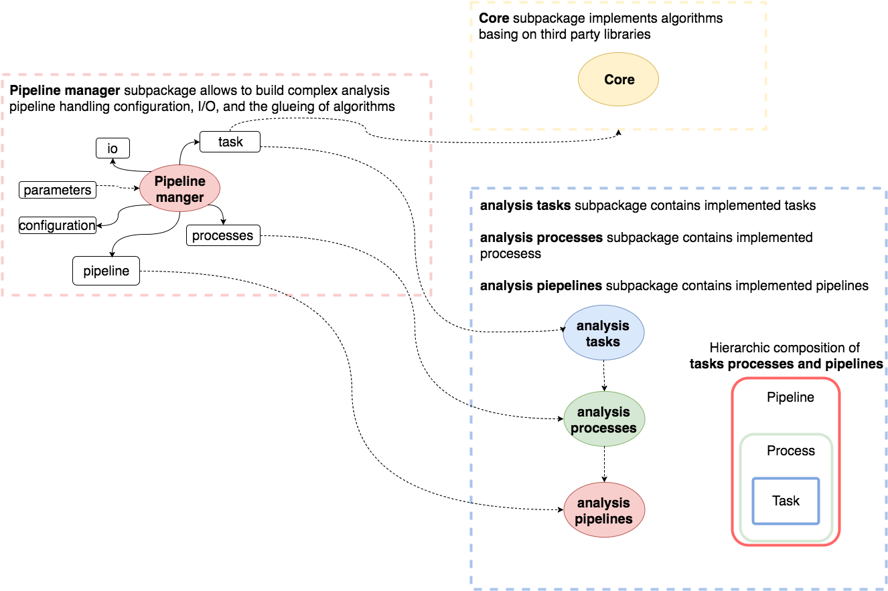
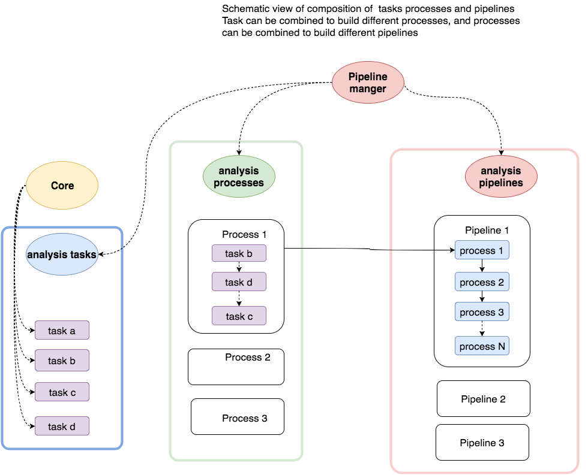
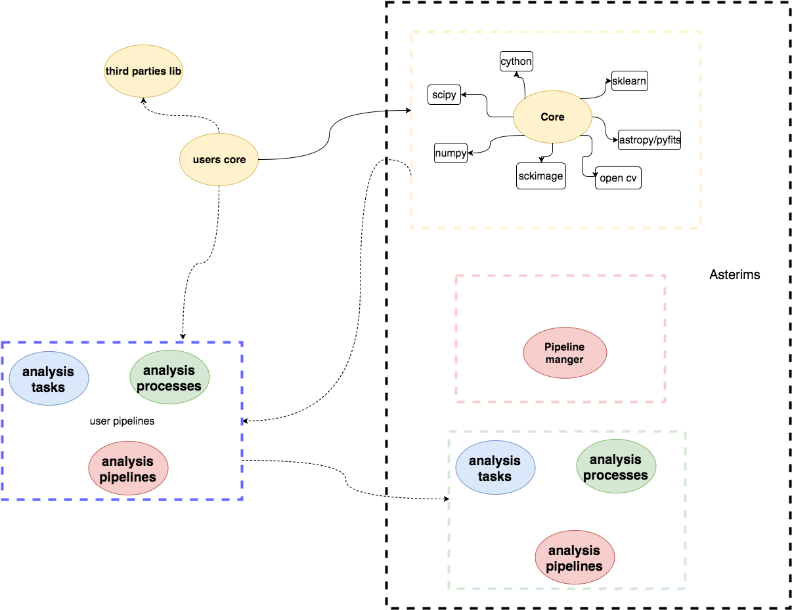

ASTErIsM is a ptyhon-based framework for detection of astronomical sources, and extraction of morphometric features. The detection and features extraction are based maninly on denisty clustering algorithms (DBSCAN and DENCLUE). ASTErIsM also offers tools for machine learning supervised classification, based on the scikit-learn framework. The kernel computation in the DENCLUE algorithm has been written in Cython to speed up the computational time. Both the DBSCAN and DENCLUE algorithms have been modified in order to work with digital images. Some image processing tasks are performed using the ndimage package from the scipy, the python wrapper of the OpenCV library, and the scikit-image framework. ASTErIsM implements also the possibility to desgin flexible user-oriented pipelines, by the use of its pipiline manager sub-package, that allows to combine together different task, with the possibility to configure parameters through configuration files
Asterism provides five main subpackages:
core: where the algorithms are implemented. This subpackage relies of well knows and robust library such as numpy scipy, open-CV, scikit-learn, scikit-image, astropy, and provides alghorithms regarding
- clustering: clustring algorithms (dbscan/denclue/nn), and clusters characterization as detected sources
- image processing (filters,geometric manipulation)
- geometry: metrics and geometric manipulation
- morphometry : shape measurements (invariants moments, statistical distributions of attractors)
- photometry : basic photometric support
- statistics: basis support for histograms and spatial 2D distribution (radial distributions etc...)
pipeline_manager: this subpackage offers all the facilities to embed algorithms into tasks, to facilitate the developing of pipelines. The basic idea is that task provides a bridge between the core algorithms and the pipeline manager package. Tasks can be combined into processes and processes into pipelines (as shown in the blue-dashed box) and the pipeline manager will orchestrate all the data flow, together with the I/O and the configuration
analysis_tasks subpackage contains implemented tasks
analysis_processes subpackage contains implemented procesess
analysis_piepelines subpackage contains implemented pipelines
The following diagram gives a schematic view of the packages relations.
The following diagram shows a more detailed view of the combination of the functional decomposition of pipeline in processes and tasks. The analysis tasks package contains the implemented analysis tasks, a process can be composed from any combination of tasks, and a pipeline can incorporate any combination of processes. The functional relation between tasks in a process, and process in pipeline is implemented by a specific method.
Users can either develop their own tasks, processes, and pipelines, as new combination of the provided ones, ore developing thier own. At the same time users can develop their own core functionalities
